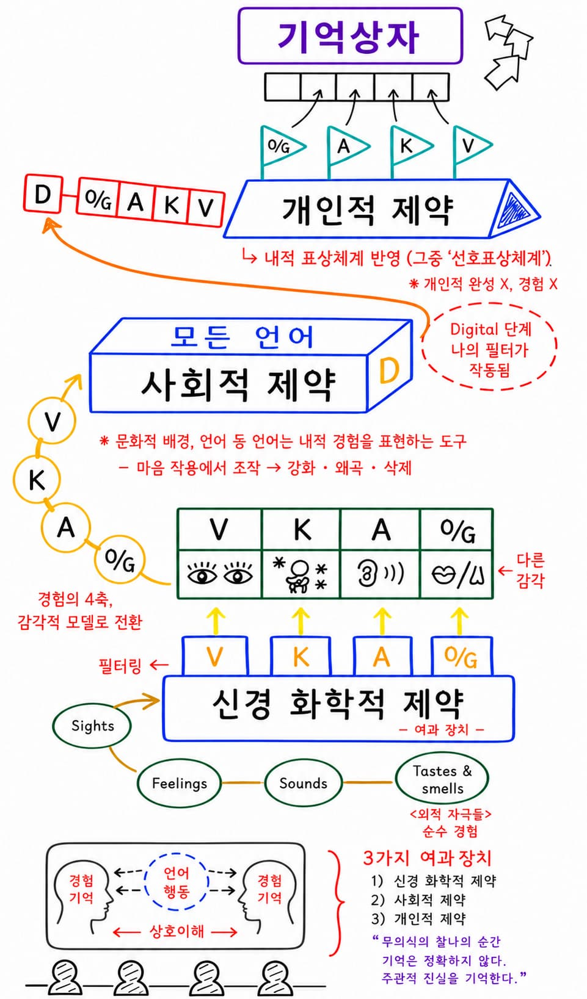

Favored Representational Systems
문항마다 가장 가까운 항목부터 탭하세요.
각 문항에서 자기에게 가장 크게 해당하는 항목을 먼저 탭하고, 이어서 가까운 순서대로 선택합니다.
- 4가장 크게 해당하는 경우
- 1가장 적게 해당하거나 관계없는 경우
검사 기록
완료한 결과를 다시 볼 수 있습니다.
문항 1
0/4 선택
가장 가까운 항목부터 탭하면 4점, 3점, 2점, 1점 순서로 기록됩니다.
검사 결과
나의 선호 표상 체계
표상 체계 해석
점수가 높은 유형의 일반적 특징을 중심으로 참고하세요.
이 검사는 자기 이해를 돕기 위한 참고용 도구입니다. 성격, 능력, 적성에 대한 진단으로 해석하지 마세요.
내가 선택한 답변
각 문항에서 내가 탭한 순서입니다. 4점이 가장 가까운 항목입니다.
Rep System Guide
표상 체계 해석
시각, 청각, 신체감각, 내부 언어적 기능의 일반적 특징을 정리했습니다.
